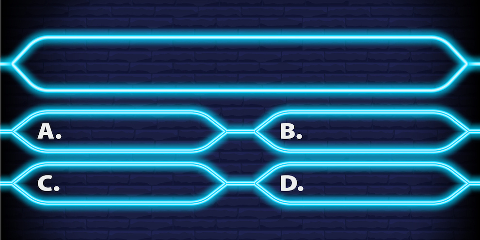
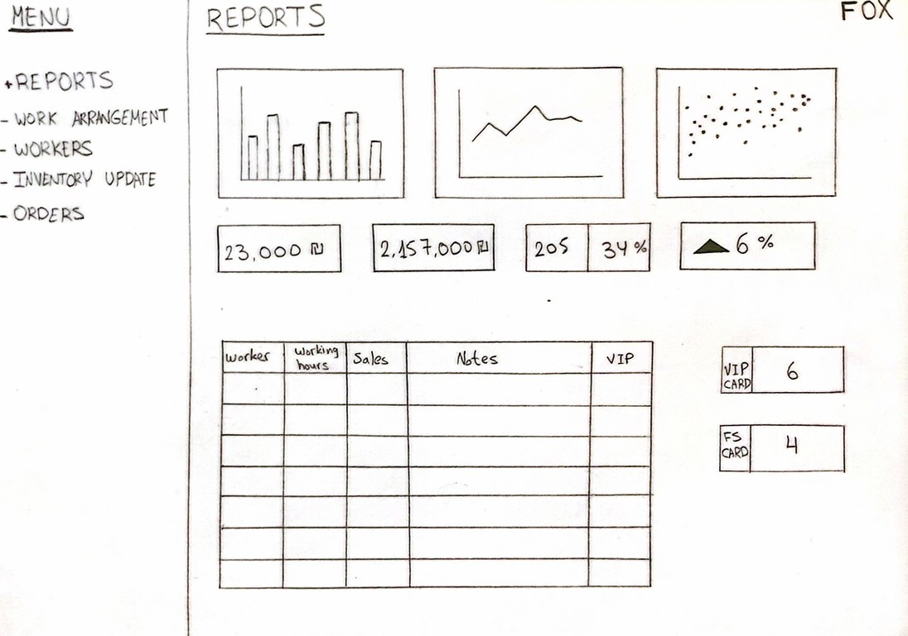

רקע ומטרת הפרויקט
פרויקט זה עוסק בפיתוח מערכת חכמה לניהול חנויות רשת פוקס. מטרת המערכת היא לשפר את ניהול המלאי, ניהול העובדים ולספק חוויית קנייה איכותית ללקוחות.
שאלות המחקר
- RQ1: כיצד ניתן לייעל את ניהול המלאי בחנויות?
- RQ2: כיצד ניתן לשפר את ניהול העובדים ומשמרותיהם?
- RQ3: כיצד ניתן לשפר את חוויית הלקוח באמצעות טכנולוגיה?
שיטת מחקר
המחקר התבסס על ניתוח נתונים שנאספו משאלונים ומראיונות עם מנהלי חנויות, לצד סקירת ספרות מקצועית.
תוצאות ראשוניות
- 80% ממנהלי החנויות דיווחו על בעיות בניהול מלאי.
- רוב העובדים ציינו שהמשמרות אינן מנוהלות באופן אופטימלי.
- לקוחות מעדיפים שילוב בין חוויית קנייה פיזית לדיגיטלית.
הצעת פתרון
מערכת ניהול חכמה שתספק התראות מלאי בזמן אמת, ניהול משמרות דיגיטלי ואופטימיזציה של חוויית הלקוח.
מסקנות
המערכת תשפר משמעותית את תפעול החנויות, תייעל את ניהול העובדים ותעלה את שביעות רצון הלקוחות.